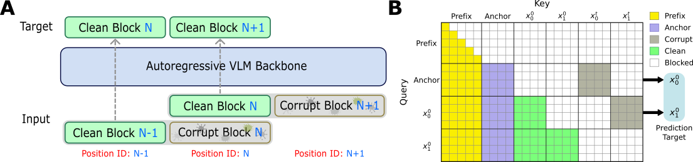
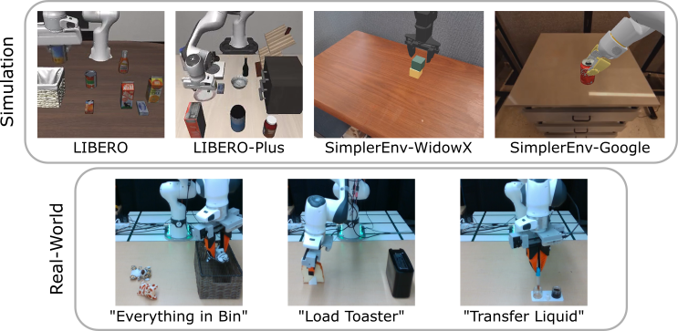
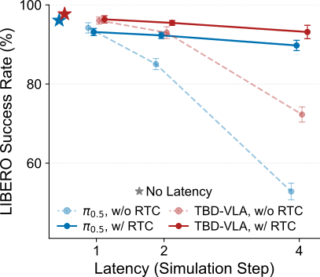
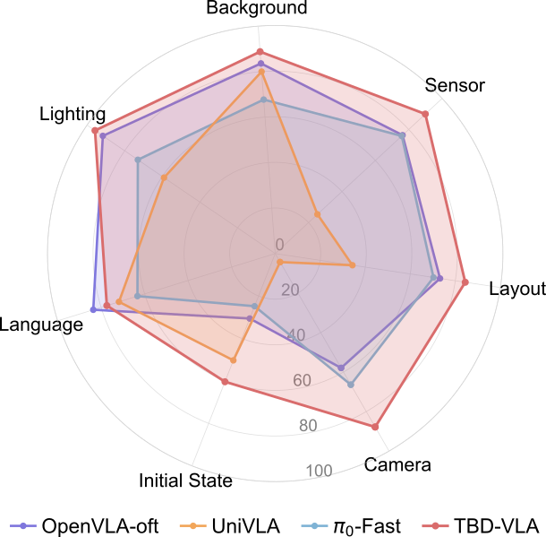
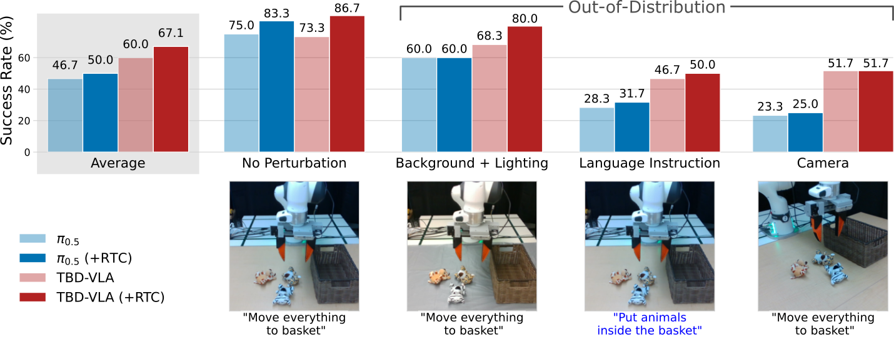

Discrete Vision-Language-Action (VLA) models typically formulate action generation as next-token prediction over discretized action spaces, conditioning each token autoregressively on prior context. While effective, this paradigm incurs high inference latency and largely ignores the temporal structure inherent in action trajectories. Recent efforts introduce parallel decoding to improve efficiency, enabling faster inference, but lack explicit mechanisms for modeling token dependencies. We introduce TBD-VLA, a discrete token-based VLA framework that incorporates block diffusion to enable temporal action generation. We partition action sequences into temporal blocks and perform masked discrete diffusion within each block, while maintaining autoregressive generation across blocks. This design unifies temporal autoregression and parallel action decoding, achieving both strong temporal coherence and improved inference speed. In addition, the explicit temporal modeling enables asynchronous execution of action chunks (e.g., Real-Time Chunking) via temporal in-painting. TBD-VLA significantly outperforms prior VLA approaches in both simulation and real-world manipulation tasks, offering a scalable path toward fast, temporally aware, discrete VLA models.
TBD-VLA represents actions as discrete tokens and factorizes the action-sequence likelihood over temporal action blocks. Within a block, tokens are decoded in parallel via masked discrete diffusion; across blocks, generation is autoregressive. This combines the efficiency of parallel decoding with explicit temporal-level autoregression.

Training for TBD-VLA. (A) Temporal-level token shift. To match the VLM backbone's autoregressive next-token-prediction objective, we shift the prediction target at the temporal level: the logits for the current action block are generated from the prior block. This bridges the gap between the self-reconstructive formulation of discrete diffusion and next-token prediction. (B) Block-level attention masking. A doubled-layout trick processes the clean action sequence and the partially masked (corrupt) action blocks in parallel under a custom attention mask that shares RoPE positions, parallelizing learning across blocks in a single pass and substantially accelerating training.
Inference. TBD-VLA combines several design choices for fast, temporally coherent decoding:
TBD-VLA generates the action sequence autoregressively between temporal blocks, while the tokens are unmasked in parallel within each block over a few discrete-diffusion steps. The most confident tokens are unmasked first. Each block conditions on the clean tokens of all previously generated blocks, giving the model explicit temporal structure while keeping decoding fast.
The grid shows action tokens laid out as action dimension (rows) × time (columns), partitioned into temporal blocks of size m. Within a block, masked tokens are revealed in parallel over nd diffusion steps (high-confidence tokens first); once a block is complete it is frozen and the next block is decoded conditioned on it.
To compensate for the inference latency in real-time control, TBD-VLA generates the next action chunk asynchronously using Real-Time Chunking (RTC). The tail of the previously generated chunk — the actions covering the latency window — is frozen and reused as an in-painting prefix for the next chunk. Each cycle the model denoises a prediction length of Ha + d timesteps: the first d are the frozen in-painting prefix, and the remaining Ha (the rollout horizon) are newly generated and then executed. This aligns well with TBD-VLA's masked block-diffusion objective, which is trained to complete action blocks from partial context, yielding temporally coherent actions despite latency.

Benchmarks and tasks. In simulation, TBD-VLA is evaluated across multiple robots: LIBERO and LIBERO-Plus using a Franka Panda arm, and SimplerEnv using the Google Robot and WidowX arm. In the real-world, three tabletop tasks are used to evaluate with a Franka Research 3 (FR3) arm.
| Model | Size | Temporal AR | Action Decoder | Latency (s) ↓ |
|---|---|---|---|---|
| SmolVLA | 0.5B | ✗ | Flow Matching | 0.297 |
| GR00T-N1 | 2.2B | ✗ | Flow Matching | 0.131 |
| π0.5 | 3B | ✗ | Flow Matching | 0.208 |
| OpenVLA | 7B | ✗ | Autoregressive | 0.344 |
| OpenVLA-OFT | 7B | ✗ | Parallel | 0.031 |
| MolmoAct | 7B | ✗ | Autoregressive | 5.633 |
| π0-FAST | 3B | ✗ | Autoregressive | 0.767 |
| Discrete Diffusion VLA | 7B | ✗ | Discrete Diffusion | 0.069 |
| VLA-0 | 3B | ▲ | Autoregressive | 1.980 |
| TBD-VLA (Ha=12) | 2B | ✓ | Block Discrete Diffusion | 0.117 |
| TBD-VLA (Ha=8) | 2B | ✓ | Block Discrete Diffusion | 0.087 |
Comparison of VLA models by size, temporal autoregression (AR), decoding strategy, and action generation latency in the LIBERO environment. VLA-0 is autoregressive in text strings. The latency of TBD-VLA scales with the rollout horizon Ha. TBD-VLA lags behind only two methods: OpenVLA-OFT and Discrete Diffusion VLA, both of which use purely parallel decoding without autoregression.
| Model | Spatial | Object | Goal | Long | Avg |
|---|---|---|---|---|---|
| OpenVLA-OFT | 96.2 | 98.3 | 96.2 | 90.7 | 95.4 |
| π0-Fast | 96.4 | 96.8 | 88.6 | 60.2 | 85.5 |
| π0.5 | 98.8 | 98.2 | 98.0 | 92.4 | 96.9 |
| GR00T-N1 | 94.4 | 97.6 | 93.0 | 90.6 | 93.9 |
| MolmoAct | 87.0 | 95.4 | 87.6 | 77.2 | 86.6 |
| UniVLA | 95.4 | 98.8 | 93.6 | 94.0 | 95.5 |
| VLA-0 | 97.0 | 97.8 | 96.2 | 87.6 | 94.7 |
| Disc Diff VLA | 97.2 | 98.6 | 97.4 | 92.0 | 96.3 |
| UD-VLA | 94.1 | 95.7 | 91.2 | 89.6 | 92.7 |
| dVLA | 97.4 | 97.9 | 98.2 | 92.2 | 96.4 |
| TBD-VLA | 97.6 | 99.6 | 97.4 | 96.6 | 97.7 |
Success rates (%) on the LIBERO benchmark across the four task suites. Best per column in bold; second-best underlined.
TBD-VLA achieves SOTA results on LIBERO at 97.7% average success rate.

LIBERO-Long success rate with/without RTC vs. inference latency. Stars denote zero added latency.
Real-Time Chunking under latency. Under an inference delay of 4 simulation steps, TBD-VLA with RTC retains a 93.2% success rate — 3.4% higher than π0.5 with RTC. Without RTC, performance degrades to 72.3% under the same latency, demonstrating the effectiveness of asynchronous inference enabled by TBD-VLA's temporal in-painting. See the visualization in the Real-Time Chunking section.

Zero-shot robustness across LIBERO-Plus perturbation scenarios.
| Model | Camera | Robot | Language | Light | Background | Noise | Layout | Avg |
|---|---|---|---|---|---|---|---|---|
| OpenVLA-OFT | 55.6 | 21.7 | 81.0 | 92.7 | 91.0 | 78.6 | 68.7 | 67.9 |
| UniVLA | 1.8 | 46.2 | 69.6 | 69.0 | 81.0 | 21.2 | 31.9 | 42.9 |
| π0-Fast | 65.1 | 21.6 | 61.0 | 73.2 | 73.2 | 74.4 | 68.8 | 61.6 |
| π0 | 13.8 | 6.0 | 58.8 | 85.0 | 81.4 | 79.0 | 68.9 | 53.6 |
| RIPT-VLA | 55.2 | 31.2 | 77.6 | 88.4 | 91.6 | 73.5 | 74.2 | 68.4 |
| TBD-VLA (w/o Pre-train) | 29.4 | 62.9 | 52.1 | 89.4 | 88.8 | 61.7 | 79.0 | 66.2 |
| TBD-VLA (w/ Pre-train) | 87.8 | 60.4 | 77.4 | 95.8 | 88.8 | 89.9 | 84.4 | 83.5 |
Zero-shot success rates (%) on LIBERO-Plus across the seven perturbation factors. Best per column in bold; second-best underlined. Baselines use the official numbers from LIBERO-Plus.
On LIBERO-Plus, which applies controlled perturbations (object layout, camera viewpoint, robot initial state, language instruction, lighting, background texture, and sensor noise), TBD-VLA reaches 83.5% average success rate, outperforming the second-best method by 15.1%.
| Model | Spoon on Towel | Carrot on Plate | Stack Block | Eggplant in Basket | Avg |
|---|---|---|---|---|---|
| Octo | 12.5 | 8.3 | 0.0 | 43.1 | 16.0 |
| OpenVLA | 0.0 | 0.0 | 0.0 | 4.1 | 1.0 |
| SpatialVLA | 20.8 | 20.8 | 25.0 | 70.8 | 34.4 |
| π0 | 29.1 | 0.0 | 16.6 | 62.5 | 27.1 |
| π0-FAST | 29.1 | 21.9 | 10.8 | 66.6 | 32.1 |
| π0.5 | 44.4 | 29.2 | 18.1 | 63.9 | 38.9 |
| UniVLA | 83.3 | 66.7 | 33.3 | 95.8 | 69.8 |
| LLaDA-VLA | 56.9 | 76.3 | 30.6 | 58.3 | 55.5 |
| Disc Diff VLA | 29.2 | 29.2 | 20.8 | 70.8 | 37.5 |
| TBD-VLA | 52.0 | 86.8 | 31.2 | 97.2 | 66.8 |
Final-success rates (%) on SimplerEnv WidowX. Best per column in bold; second-best underlined.
| Model | Pick Can (VM) | Move Near (VM) | Drawer (VM) | Avg (VM) | Pick Can (VA) | Move Near (VA) | Drawer (VA) | Avg (VA) |
|---|---|---|---|---|---|---|---|---|
| Octo | 17.0 | 4.2 | 22.7 | 16.8 | 0.6 | 3.1 | 1.1 | 1.1 |
| OpenVLA | 16.3 | 46.2 | 35.6 | 27.7 | 54.5 | 47.7 | 17.7 | 39.8 |
| SpatialVLA | 86.0 | 77.9 | 57.4 | 73.8 | 88.0 | 72.7 | 41.8 | 70.7 |
| π0 | 72.7 | 65.3 | 38.3 | 58.8 | 75.2 | 63.7 | 25.6 | 54.8 |
| π0-FAST | 75.3 | 67.5 | 42.9 | 61.9 | 77.6 | 68.2 | 31.3 | 59.0 |
| InternVLA-M1 | 95.3 | 90.0 | 52.5 | 79.3 | 97.1 | 82.0 | 72.0 | 83.7 |
| TBD-VLA | 99.2 | 85.0 | 88.9 | 91.0 | 97.2 | 78.3 | 83.4 | 86.3 |
Success rates (%) on SimplerEnv Google Robot under Visual Matching (VM) and Variant Aggregation (VA). "Drawer" averages opening and closing tasks. Best in bold; second-best underlined.
We design three real-world tabletop tasks on a Franka Research 3 robot with global and in-hand RealSense D435 cameras, requiring long-horizon reasoning ("put every object on the table in the basket"), dexterity ("insert the bread into the toaster"), and reactiveness ("transfer the liquid"). Each method is evaluated under one in-distribution and three out-of-distribution settings (camera viewpoint, language, background/lighting), for 240 rollouts per method.

Real-world results. Across the three tasks, TBD-VLA achieves a 67.1% average success rate, outperforming π0.5 at 50.0%. RTC improves both methods; without RTC, TBD-VLA degrades to 60.0%. TBD-VLA maintains strong performance across out-of-distribution settings, demonstrating the effectiveness of temporal modeling with block diffusion.
| Configuration | Success Rate (%) ↑ | Inference Time (s) ↓ | VLM Forward Passes ↓ |
|---|---|---|---|
| m=1, nd=2, Expectation | 84.6 (−4.1) | 0.223 (+0.137) | 16 (+12) |
| m=16, nd=2, Expectation | 84.0 (−4.7) | 0.061 (−0.025) | 2 (−2) |
| m=4, nd=1, Expectation | 85.7 (−3.0) | 0.060 (−0.026) | 2 (−2) |
| m=4, nd=2, Argmax | 81.6 (−7.1) | 0.086 (0.000) | 4 (0) |
| m=4, nd=2, Expectation | 88.7 | 0.086 | 4 |
SimplerEnv Google Robot success rate, inference time, and VLM forward passes across temporal block size m, per-block diffusion steps nd, and action sampling method. Measured on a single NVIDIA RTX A40 GPU.
| Components | Baseline | + Decode as Needed | + KV Cache | + VLM Compile |
|---|---|---|---|---|
| Inference Speed (s) | 0.185 | 0.125 ↓ (−0.060) | 0.113 ↓ (−0.012) | 0.086 ↓ (−0.027) |
Inference speed breakdown. Decode-as-needed and KV caching are TBD-VLA optimizations; VLM compile applies PyTorch compilation to the VLM forward pass.
@article{lee2026tbdvlatemporalblockdiffusion,
title={TBD-VLA: Temporal Block Diffusion Vision Language Action Model},
author={Lee, Sung-Wook and Kang, Xuhui and Kuo, Yen-Ling},
journal={arXiv preprint},
year={2026},
}